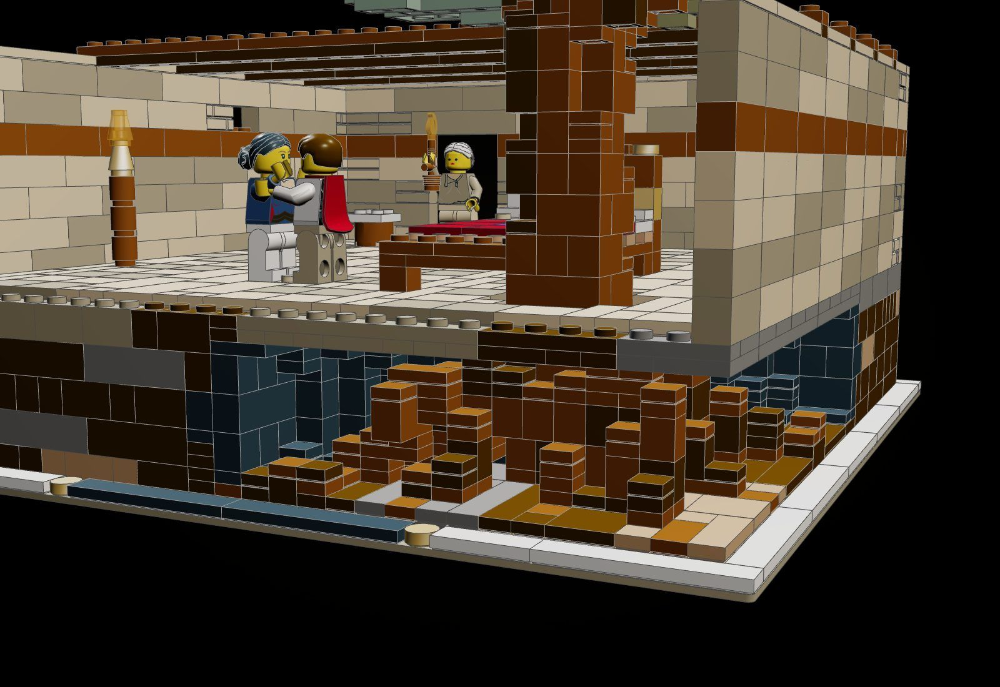
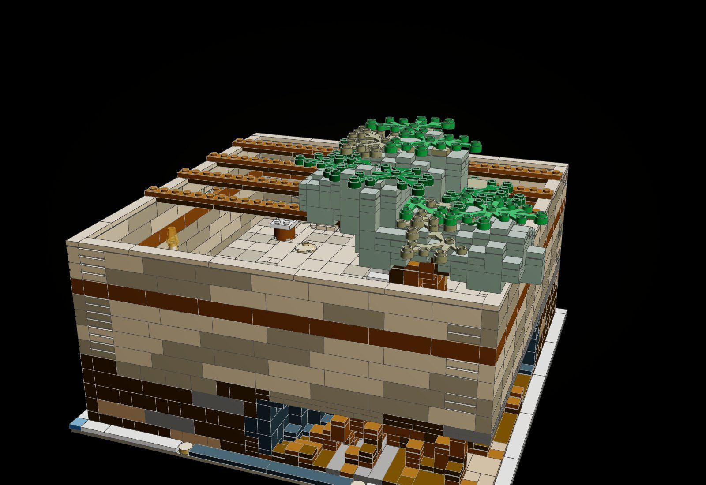
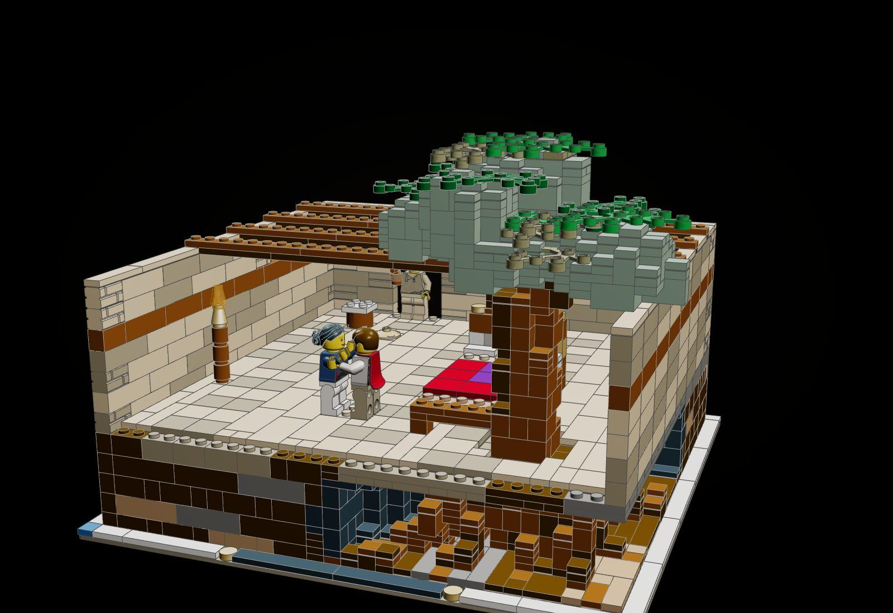
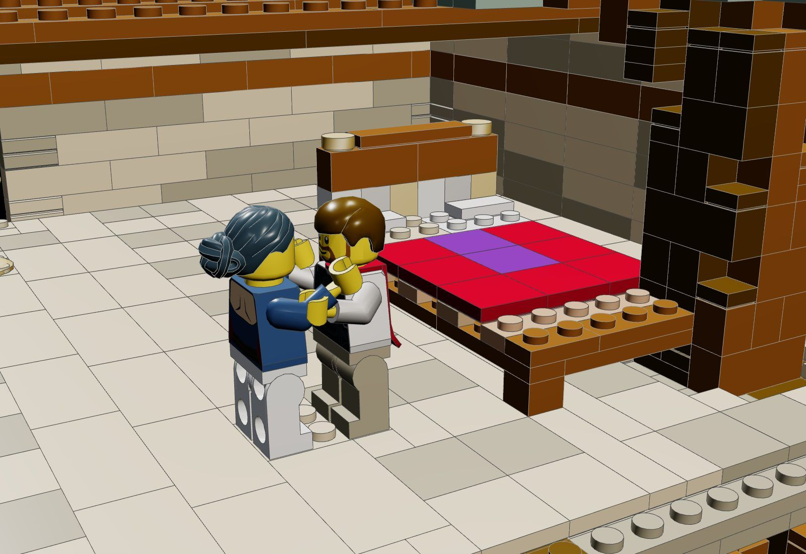
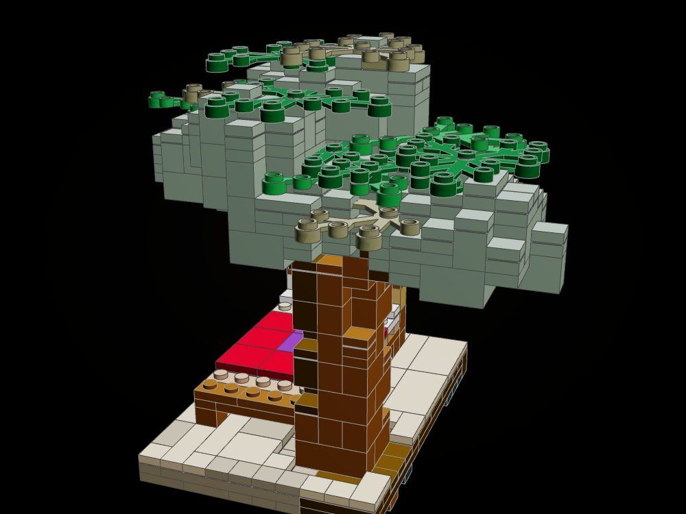
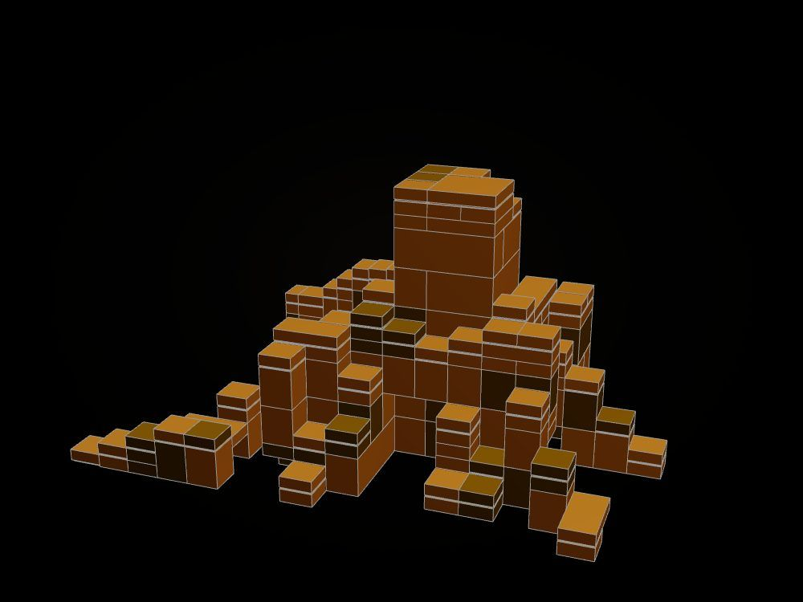
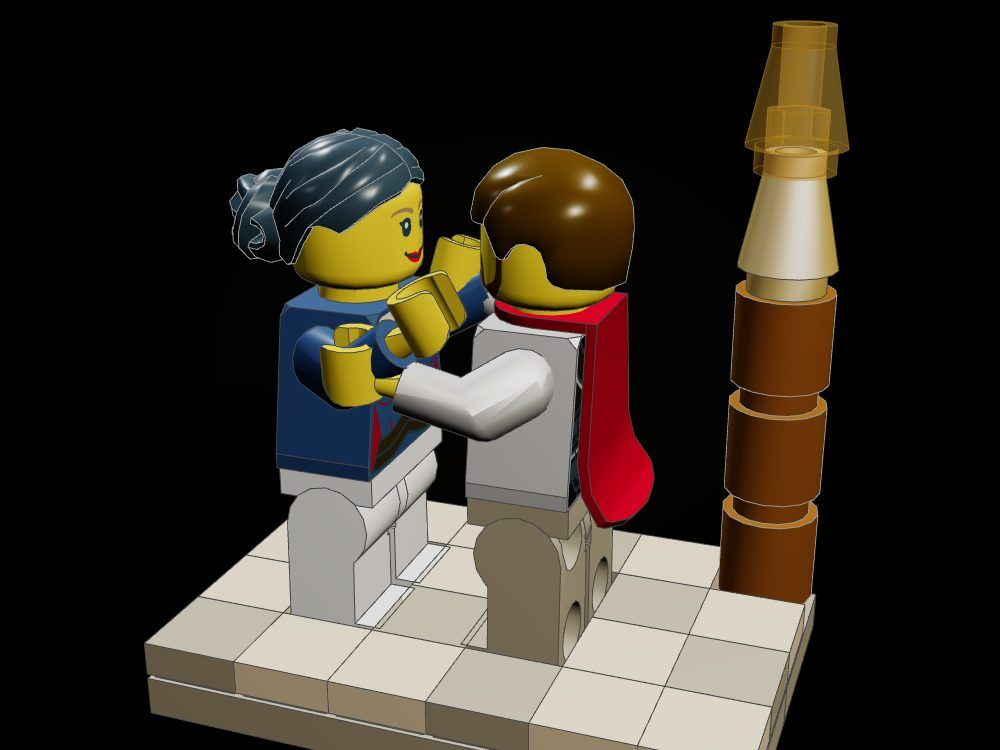
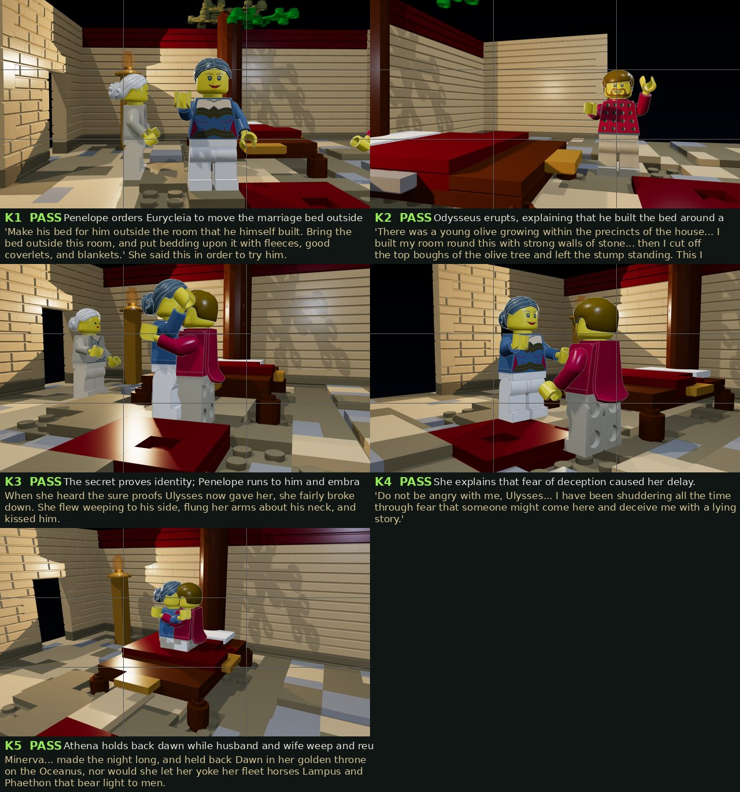

The Bed
Penelope has ordered the bed carried out; Odysseus, stung, tells how he built it round a living olive, and she runs to him: the two embrace beside the bed while old Eurycleia stands in the doorway with the lamp.
There was a young olive growing within the precincts of the house, in full vigour, and about as thick as a bearing-post. I built my room round this with strong walls of stone and a roof to cover them. (Odyssey XXIII, tr. Samuel Butler)

The object
The olive: its trunk is the bed's near-left post and runs down through the cut-open paving into a mass of roots in the base. The bed's rails and straps are laid through courses of the living trunk, so the bed will not lift out of the room: it is clutched to the ground through the floor. The crown rises between the ceiling beams in leaf. The front wall lifts away.






How it is built
- The olive, its roots and the earth are sculpted as one form in plate cells (tools/forage/product/sculpt.py): bark in reddish brown, dark brown and a little olive, roots reddish brown against dark earth, the crown in sand green and dark green with sprays of leaves.
- The play feature is structural: the bed's side and end rails and two of its ox-hide straps pass through courses of the trunk, which is built up from the roots on the baseplate, so lifting the bed lifts nothing.
- The earth block is cut open at the front and left side down to the base, with the dark of the cut behind the roots; the paving is cut open round the flare of the trunk.
- Close-set ashlar in tan and dark tan with embossed masonry bricks, one course of timber laced through the walls, the back corners bonded; the front wall is a separate running-bond panel that lifts off.
- The bed: squared posts, a headboard with a course of gold, silver and white inlay, ox-hide straps with gaps between, fleeces and pillows at the head, a red and purple coverlet.
- The paving is 2 x 4 and 2 x 2 tiles in tan and dark tan; studs are left only where someone or something stands.
- Every card checks clean: every part clicked, no two parts in the same space.
The builds inside the build
The bed on its living post
The trunk with its crown and the bed pegged into it, standing on a slab of paving and made ground.
The roots
The root mass and the foot of the trunk, the sculpted part that lives under the floor.
The embrace
Odysseus and Penelope embracing on a slab of paving, with the lit lamp on its stand.
What the checker says
| Build | File | Pieces | Loose | Clashes |
|---|---|---|---|---|
| The Bed (closed) | set.the-bed | 2,232 | 0 | 0 |
| The Bed, the front wall lifted away | set.the-bed-open | 2,171 | 0 | 0 |
| The bed on its living post | set.the-bed-bed | 549 | 0 | 0 |
| The roots | set.the-bed-roots | 198 | 0 | 0 |
| The embrace | set.the-bed-embrace | 47 | 0 | 0 |
In the film

Still to do
- The crown is a voxel mass with leaf sprays; it reads as a tree from above but not yet as the long-leaved olive of the poem.
- The roots read as a tangle of stepped bricks rather than as tapering roots; a finer cut (plates rather than brick-merged cells) would help.
- Figures, the torch and the angled parts are placed by hand and are not checked by the tool; the embrace arms are re-posed about the shoulder pins.
- Homer sets the recognition itself in the hall (the chamber is the next scene); the kit brings it into the chamber, beside the bed it turns on.
- The closed front wall is plain; it hides the moment, which is only seen from above or with the wall lifted.